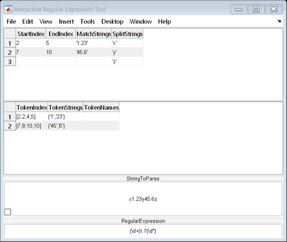

NATSORTROWS Examples
The function NATSORTROWS sorts the rows of a matrix A (cell/string/table/...) taking into account number values within the text. This is known as natural order or alphanumeric order. Note that MATLAB's inbuilt SORTROWS function sorts text by character code.
To sort filenames, foldernames, or filepaths use NATSORTFILES.
To sort the elements of a string/cell/categorical array use NATSORT.
NATSORTROWS calls NATSORT to provide the natural order text sort.
Contents
- Basic Usage:
- Input 1: Array to Sort
- Input 2: Regular Expression
- Input 3+: Specify the Columns to Sort
- Input 3+: Specify the Sort Directions
- Input 3+: Table Row Names
- Input 3+: Table Variable Names
- Inputs 3+: Optional Arguments
- Output 2: Sort Index
- Output 3: Debugging Array
- Regular Expression: Decimal Fractions, E-notation, +/- Sign.
- Example: Decimal Comma and Decimal Point
- Bonus: Interactive Regular Expression Tool
Basic Usage:
By default NATSORTROWS interprets consecutive digits as being part of a single integer, any remaining substrings are treated as text.
Aa = ["A2","X";"A10","Y";"A10","X";"A1","X"]; sortrows(Aa) % for comparison natsortrows(Aa)
ans =
4×2 string array
"A1" "X"
"A10" "X"
"A10" "Y"
"A2" "X"
ans =
4×2 string array
"A1" "X"
"A2" "X"
"A10" "X"
"A10" "Y"
Input 1: Array to Sort
The first input A must be one of the following array types:
- a character matrix,
- a cell array of character row vectors,
- a cell array with columns consisting either exclusively of character row vectors or exclusively of numeric scalars: see "SortNum" option below.
- a table array,
- a string array,
- a categorical array (see also REORDERCATS),
- any other array type that can be converted by CELLSTR
The first input must be a matrix (i.e. two dimensions only).
The sorted matrix is returned as the first output, for example:
natsortrows(categorical(Aa)) % see also REORDERCATS
ans =
4×2 categorical array
A1 X
A2 X
A10 X
A10 Y
Input 2: Regular Expression
The optional second input argument rgx is a regular expression which specifies the number matching (see "Regular Expression" section below):
Ab = ["1.3","X";"1.10","X";"1.2","X"]; natsortrows(Ab) % By default match integers only. natsortrows(Ab, '\d+\.?\d*') % Match decimal fractions.
ans =
3×2 string array
"1.2" "X"
"1.3" "X"
"1.10" "X"
ans =
3×2 string array
"1.10" "X"
"1.2" "X"
"1.3" "X"
Input 3+: Specify the Columns to Sort
If required the columns to be sorted may be specified using one of:
- Logical vector of indices into the columns of A.
- Numeric vector of indices into the columns of A, where a positive integer sorts the corresponding column in ascending order, and a negative integer sorts the corresponding column in descending order. This corresponds to SORTROWS' columns option.
For example, the second column is sorted ascending and the third descending:
Ac = ["A","2","Y";"B","2","X";"B","10","X";"A","20","X";"A","100","X"]; sortrows(Ac, [2,-3]) % for comparison natsortrows(Ac, [], [2,-3])
ans =
5×3 string array
"B" "10" "X"
"A" "100" "X"
"A" "2" "Y"
"B" "2" "X"
"A" "20" "X"
ans =
5×3 string array
"A" "2" "Y"
"B" "2" "X"
"B" "10" "X"
"A" "20" "X"
"A" "100" "X"
Input 3+: Specify the Sort Directions
SORTROWS' direction option is supported, where a cell array of the character vectors 'ascend', 'descend', and/or 'ignore' specify the sort directions of the columns to be sorted (this means either all of the columns or the columns specified by the column or vars option).
In these examples the second column is sorted ascending and the third descending:
natsortrows(Ac, [], [2,3], {'ascend','descend'})
natsortrows(Ac, [], [false,true,true], {'ascend','descend'})
natsortrows(Ac, [], {'ignore','ascend','descend'})
ans =
5×3 string array
"A" "2" "Y"
"B" "2" "X"
"B" "10" "X"
"A" "20" "X"
"A" "100" "X"
ans =
5×3 string array
"A" "2" "Y"
"B" "2" "X"
"B" "10" "X"
"A" "20" "X"
"A" "100" "X"
ans =
5×3 string array
"A" "2" "Y"
"B" "2" "X"
"B" "10" "X"
"A" "20" "X"
"A" "100" "X"
Input 3+: Table Row Names
SORTROWS' 'RowNames' option is supported for tables, either as the literal text 'RowNames' or as the name of table's first dimension (i.e. SORTROWS' rowDimName option).
T = array2table(Ac,'RowNames',{'R20','R1','R10','R2','R9'},'VariableNames',{'V1','V2','V3'}); natsortrows(T, [], 'RowNames') natsortrows(T, [], 'Row') % First Dimension Name
ans =
5×3 table
V1 V2 V3
___ _____ ___
R1 "B" "2" "X"
R2 "A" "20" "X"
R9 "A" "100" "X"
R10 "B" "10" "X"
R20 "A" "2" "Y"
ans =
5×3 table
V1 V2 V3
___ _____ ___
R1 "B" "2" "X"
R2 "A" "20" "X"
R9 "A" "100" "X"
R10 "B" "10" "X"
R20 "A" "2" "Y"
Input 3+: Table Variable Names
SORTROWS' vars option is supported for tables, i.e. one of:
- a logical or numeric vector of indices into the table variables.
- the name of one table variable to sort by.
- a cell array of one or more names of the table variables to sort by.
natsortrows(T, [], {'V2','V3'},{'ascend','descend'})
natsortrows(T, [], [2,3], {'ascend','descend'})
ans =
5×3 table
V1 V2 V3
___ _____ ___
R20 "A" "2" "Y"
R1 "B" "2" "X"
R10 "B" "10" "X"
R2 "A" "20" "X"
R9 "A" "100" "X"
ans =
5×3 table
V1 V2 V3
___ _____ ___
R20 "A" "2" "Y"
R1 "B" "2" "X"
R10 "B" "10" "X"
R2 "A" "20" "X"
R9 "A" "100" "X"
Inputs 3+: Optional Arguments
Further inputs are passed directly to NATSORT, thus giving control over the case sensitivity, sort direction, and other options. See the NATSORT help for explanations and examples of the supported options:
Ae = ["B","X";"10","X";"1","X";"A","X";"2","X"]; natsortrows(Ae, [], 'descend') natsortrows(Ae, [], 'char<num')
ans =
5×2 string array
"B" "X"
"A" "X"
"10" "X"
"2" "X"
"1" "X"
ans =
5×2 string array
"A" "X"
"B" "X"
"1" "X"
"2" "X"
"10" "X"
Output 2: Sort Index
The second output ndx is a numeric array of the sort indices, in general such that B = A(ndx,:) where B = natsortrows(A,...). Note that NATSORTROWS provides a stable sort:
Af = ["abc2","";"abc1","Y";"abc10","";"abc1","Z";"abc1","X";"abc2",""] [out,ndx] = natsortrows(Af)
Af =
6×2 string array
"abc2" ""
"abc1" "Y"
"abc10" ""
"abc1" "Z"
"abc1" "X"
"abc2" ""
out =
6×2 string array
"abc1" "X"
"abc1" "Y"
"abc1" "Z"
"abc2" ""
"abc2" ""
"abc10" ""
ndx =
5
2
4
1
6
3
Output 3: Debugging Array
The third output dbg is a cell vector of cell arrays, the inner cell arrays correspond to the columns of the input array A. The cell arrays contain all matched numbers (after converting to numeric using the specified SSCANF format) and all non-number substrings of A. These cell arrays are useful for confirming that the numbers are being correctly identified by the regular expression.
[~,~,dbg] = natsortrows(Af);
dbg{:}
ans =
6×2 cell array
{'abc'} {[ 2]}
{'abc'} {[ 1]}
{'abc'} {[10]}
{'abc'} {[ 1]}
{'abc'} {[ 1]}
{'abc'} {[ 2]}
ans =
6×1 cell array
{0×0 double}
{'Y' }
{0×0 double}
{'Z' }
{'X' }
{0×0 double}
Regular Expression: Decimal Fractions, E-notation, +/- Sign.
NATSORTROWS number matching can be customized to detect numbers with a decimal fraction, E-notation, a +/- sign, binary/hexadecimal, or other required features. The number matching is specified using an appropriate regular expression, see NATSORT for details and examples.
Ag = ["v10.2","b"; "v2.5","b"; "v2.40","a"; "v1.9","b"]; natsortrows(Ag) % by default match integers, e.g. version numbers. natsortrows(Ag,'\d+\.?\d*') % match decimal fractions.
ans =
4×2 string array
"v1.9" "b"
"v2.5" "b"
"v2.40" "a"
"v10.2" "b"
ans =
4×2 string array
"v1.9" "b"
"v2.40" "a"
"v2.5" "b"
"v10.2" "b"
Example: Decimal Comma and Decimal Point
Many languages use a decimal comma instead of a decimal point. NATSORTROWS parses both the decimal comma and the decimal point, e.g.:
Ah = ["1,3"; "1,10"; "1,2"]; natsortrows(Ah, '\d+,?\d*') % match optional decimal comma
ans =
3×1 string array
"1,10"
"1,2"
"1,3"
Bonus: Interactive Regular Expression Tool
Regular expressions are powerful and compact, but getting them right is not always easy. One assistance is to download my interactive tool IREGEXP, which lets you quickly try different regular expressions and see all of REGEXP's outputs displayed and updated as you type:
iregexp('x1.23y45.6z','(\d+)\.?(\d*)') % download IREGEXP from FEX 48930.